from scipy import linalgSciPy - Librairie d’algorithmes pour le calcul scientifique en Python
Joseph Salmon : joseph.salmon@umontpellier.frAdapté du travail de
- A. Gramfort (alexandre.gramfort@inria.fr) http://alexandre.gramfort.net/
- J.R. Johansson (robert@riken.jp) http://dml.riken.jp/~rob/
Introduction
SciPy s’appuie sur NumPy.
SciPy fournit des implémentations efficaces d’algorithmes standards.
Certains des sujets couverts par SciPy:
- Fonctions Spéciales (scipy.special)
- Intégration (scipy.integrate)
- Optimisation (scipy.optimize)
- Interpolation (scipy.interpolate)
- Transformées de Fourier (scipy.fftpack)
- Traitement du Signal (scipy.signal)
- Algèbre Linéaire (scipy.linalg)
- Matrices Sparses et Algèbre Linéaire Sparse (scipy.sparse)
- Statistiques (scipy.stats)
- Traitement d’images N-dimensionelles (scipy.ndimage)
- Lecture/Ecriture Fichiers IO (scipy.io)
Durant ce cours on abordera certains de ces modules.
Pour utiliser un module de SciPy dans un programme Python il faut commencer par l’importer.
Voici un exemple avec le module linalg
On aura besoin de NumPy:
import numpy as npEt de matplotlib/pylab:
# et JUSTE POUR MOI (pour avoir les figures dans le notebook)
%matplotlib inline
import matplotlib.pyplot as pltFonctions Spéciales
Un grand nombre de fonctions importantes, notamment en physique, sont disponibles dans le module scipy.special
Pour plus de détails: http://docs.scipy.org/doc/scipy/reference/special.html#module-scipy.special.
Un exemple avec les fonctions de Bessel:
# jn : Bessel de premier type
# yn : Bessel de deuxième type
from scipy.special import jn, ynjn?n = 0 # ordre
x = 0.0
# Bessel de premier type
print("J_%d(%s) = %f" % (n, x, jn(n, x)))
x = 1.0
# Bessel de deuxième type
print("Y_%d(%s) = %f" % (n, x, yn(n, x)))J_0(0.0) = 1.000000
Y_0(1.0) = 0.088257x = np.linspace(0, 10, 100)
for n in range(4):
plt.plot(x, jn(n, x), label=r"$J_%d(x)$" % n)
plt.legend()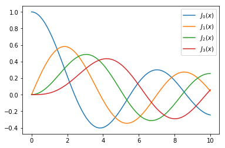
from scipy import special
special?Intégration
intégration numerique
L’évaluation numérique de:
\displaystyle \int_a^b f(x) dx
est nommée quadrature (abbr. quad). SciPy fournit différentes fonctions: par exemple quad, dblquad et tplquad pour les intégrales simples, doubles ou triples.
from scipy.integrate import quad, dblquad, tplquadquad?L’usage de base:
# soit une fonction f
def f(x):
return xa, b = 1, 2 # intégrale entre a et b
val, abserr = quad(f, a, b)
print("intégrale =", val, ", erreur =", abserr )intégrale = 1.5 , erreur = 1.6653345369377348e-14EXERCICE: Intégrer la fonction de Bessel jn d’ordre 3 entre 0 et 10
Exemple intégrale double:
\int_{x=1}^{2} \int_{y=1}^{x} (x + y^2) dx dy
dblquad?def f(y, x):
return x + y**2
def gfun(x):
return 1
def hfun(x):
return x
print(dblquad(f, 1, 2, gfun, hfun))(1.7500000000000002, 4.7941068289487755e-14)Equations différentielles ordinaires (EDO)
SciPy fournit deux façons de résoudre les EDO: Une API basée sur la fonction odeint, et une API orientée-objet basée sur la classe ode.
odeint est plus simple pour commencer.
Commençons par l’importer:
from scipy.integrate import odeintUn système d’EDO se formule de la façon standard:
y' = f(y, t)
avec
y = [y_1(t), y_2(t), ..., y_n(t)]
et f est une fonction qui fournit les dérivées des fonctions y_i(t). Pour résoudre une EDO il faut spécifier f et les conditions initiales, y(0).
Une fois définies, on peut utiliser odeint:
y_t = odeint(f, y_0, t)où t est un NumPy array des coordonnées en temps où résoudre l’EDO. y_t est un array avec une ligne pour chaque point du temps t, et chaque colonne correspond à la solution y_i(t) à chaque point du temps.
Exemple: double pendule
Description: http://en.wikipedia.org/wiki/Double_pendulum
from IPython.core.display import Image
Image(url='http://upload.wikimedia.org/wikipedia/commons/c/c9/Double-compound-pendulum-dimensioned.svg')
Les équations du mouvement du pendule sont données sur la page wikipedia:
{\dot \theta_1} = \frac{6}{m\ell^2} \frac{ 2 p_{\theta_1} - 3 \cos(\theta_1-\theta_2) p_{\theta_2}}{16 - 9 \cos^2(\theta_1-\theta_2)}
{\dot \theta_2} = \frac{6}{m\ell^2} \frac{ 8 p_{\theta_2} - 3 \cos(\theta_1-\theta_2) p_{\theta_1}}{16 - 9 \cos^2(\theta_1-\theta_2)}.
{\dot p_{\theta_1}} = -\frac{1}{2} m \ell^2 \left [ {\dot \theta_1} {\dot \theta_2} \sin (\theta_1-\theta_2) + 3 \frac{g}{\ell} \sin \theta_1 \right ]
{\dot p_{\theta_2}} = -\frac{1}{2} m \ell^2 \left [ -{\dot \theta_1} {\dot \theta_2} \sin (\theta_1-\theta_2) + \frac{g}{\ell} \sin \theta_2 \right]
où les p_{\theta_i} sont les moments d’inertie. Pour simplifier le code Python, on peut introduire la variable x = [\theta_1, \theta_2, p_{\theta_1}, p_{\theta_2}]
{\dot x_1} = \frac{6}{m\ell^2} \frac{ 2 x_3 - 3 \cos(x_1-x_2) x_4}{16 - 9 \cos^2(x_1-x_2)}
{\dot x_2} = \frac{6}{m\ell^2} \frac{ 8 x_4 - 3 \cos(x_1-x_2) x_3}{16 - 9 \cos^2(x_1-x_2)}
{\dot x_3} = -\frac{1}{2} m \ell^2 \left [ {\dot x_1} {\dot x_2} \sin (x_1-x_2) + 3 \frac{g}{\ell} \sin x_1 \right ]
{\dot x_4} = -\frac{1}{2} m \ell^2 \left [ -{\dot x_1} {\dot x_2} \sin (x_1-x_2) + \frac{g}{\ell} \sin x_2 \right]
g = 9.82
L = 0.5
m = 0.1
def dx(x, t):
"""The right-hand side of the pendulum ODE"""
x1, x2, x3, x4 = x[0], x[1], x[2], x[3]
dx1 = 6.0/(m*L**2) * (2 * x3 - 3 * np.cos(x1-x2) * x4)/(16 - 9 * np.cos(x1-x2)**2)
dx2 = 6.0/(m*L**2) * (8 * x4 - 3 * np.cos(x1-x2) * x3)/(16 - 9 * np.cos(x1-x2)**2)
dx3 = -0.5 * m * L**2 * ( dx1 * dx2 * np.sin(x1-x2) + 3 * (g/L) * np.sin(x1))
dx4 = -0.5 * m * L**2 * (-dx1 * dx2 * np.sin(x1-x2) + (g/L) * np.sin(x2))
return [dx1, dx2, dx3, dx4]# on choisit une condition initiale
x0 = [np.pi/4, np.pi/2, 0, 0]# les instants du temps: de 0 à 10 secondes
t = np.linspace(0, 10, 250)# On résout
x = odeint(dx, x0, t)
print(x.shape)(250, 4)# affichage des angles en fonction du temps
fig, axes = plt.subplots(1,2, figsize=(12,4))
axes[0].plot(t, x[:, 0], 'r', label="theta1")
axes[0].plot(t, x[:, 1], 'b', label="theta2")
x1 = + L * np.sin(x[:, 0])
y1 = - L * np.cos(x[:, 0])
x2 = x1 + L * np.sin(x[:, 1])
y2 = y1 - L * np.cos(x[:, 1])
axes[1].plot(x1, y1, 'r', label="pendulum1")
axes[1].plot(x2, y2, 'b', label="pendulum2")
axes[1].set_ylim([-1, 0])
axes[1].set_xlim([1, -1])
plt.legend()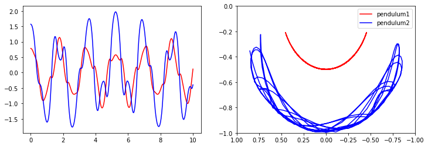
Transformées de Fourier
SciPy utilise la librairie FFTPACK écrite en FORTRAN.
Commençons par l’import:
from scipy import fftpackNous allons calculer les transformées de Fourier discrètes de fonctions spéciales:
from scipy.signal import gausspulse
t = np.linspace(-1, 1, 1000)
x = gausspulse(t, fc=20, bw=0.5)
# Calcul de la TFD
F = fftpack.fft(x)
# calcul des fréquences en Hz si on suppose un échantillonage à 1000Hz
freqs = fftpack.fftfreq(len(x), 1. / 1000.)
fig, axes = plt.subplots(1, 2, figsize=(12,4))
axes[0].plot(t, x) # plot du signal
axes[0].set_ylim([-2, 2])
axes[1].plot(freqs, np.abs(F)) # plot du module de la TFD
axes[1].set_xlim([0, 200])
# mask = (freqs > 0) & (freqs < 200)
# axes[0].plot(freqs[mask], abs(F[mask])) # plot du module de la TFD
axes[1].set_xlabel('Freq (Hz)')
plt.show()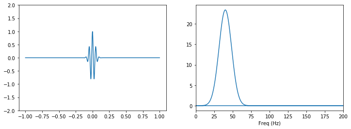
EXERCICE : Le signal est réel du coup la TFD est symétrique. Afficher la TFD restreinte aux fréquences positives et la TFD restreinte aux fréquences entre 0 et 200Hz.
Algèbre linéaire
Le module de SciPy pour l’algèbre linéaire est linalg. Il inclut des routines pour la résolution des systèmes linéaires, recherche de vecteur/valeurs propres, SVD, Pivot de Gauss (LU, cholesky), calcul de déterminant etc.
Documentation : http://docs.scipy.org/doc/scipy/reference/linalg.html
Résolution d’equations linéaires
Trouver x tel que:
A x = b
avec A une matrice et x,b des vecteurs.
A = np.array([[1,0,3], [4,5,12], [7,8,9]], dtype=np.float)
b = np.array([[1,2,3]], dtype=np.float).T
print(A)
print(b)[[ 1. 0. 3.]
[ 4. 5. 12.]
[ 7. 8. 9.]]
[[1.]
[2.]
[3.]]from scipy import linalg
x = linalg.solve(A, b)
print(x)[[ 0.8 ]
[-0.4 ]
[ 0.06666667]]print(x.shape)
print(b.shape)(3, 1)
(3, 1)# Vérifier le résultatValeurs propres et vecteurs propres
\displaystyle A v_n = \lambda_n v_n
avec v_n le nème vecteur propre et \lambda_n la nème valeur propre.
Les fonctions sont: eigvals et eig
A = np.random.randn(3, 3)evals, evecs = linalg.eig(A)evalsarray([-0.66965225+0.j , 0.17409018+0.72343577j,
0.17409018-0.72343577j])evecsarray([[-0.8924643 +0.j , -0.24392886+0.08650827j,
-0.24392886-0.08650827j],
[ 0.35276263+0.j , -0.41507721-0.48364155j,
-0.41507721+0.48364155j],
[-0.28118676+0.j , -0.72582146+0.j ,
-0.72582146-0.j ]])EXERCICE : vérifier qu’on a bien des valeurs et vecteurs propres.
Si A est symmétrique
A = A + A.T
# A += A.T # ATTENTION MARCHE PAS !!!!
evals = linalg.eigvalsh(A)
print(evals)[-2.26971637 -0.78604603 2.41281861]print(linalg.eigh(A))(array([-2.26971637, -0.78604603, 2.41281861]), array([[ 0.77105047, 0.54540494, -0.32865578],
[-0.25174552, -0.21298716, -0.94406603],
[-0.58489773, 0.81066018, -0.0269206 ]]))Opérations matricielles
# inversion
linalg.inv(A)array([[-0.59560231, 0.36189753, -0.36011983],
[ 0.36189753, 0.28375231, 0.16531595],
[-0.36011983, 0.16531595, -0.98647076]])# vérifier# déterminant
linalg.det(A)4.304713416052223# normes
print(linalg.norm(A, ord='fro')) # frobenius
print(linalg.norm(A, ord=2))
print(linalg.norm(A, ord=np.inf))3.4045813862602525
2.4128186096765107
3.388625992062134EXERCICE : Vérifier les résultats
La norme infinie est la norme infinie de la norme 1 de chaque ligne.
Optimisation
Objectif: trouver les minima ou maxima d’une fonction
Doc : http://scipy-lectures.github.com/advanced/mathematical_optimization/index.html
On commence par l’import
from scipy import optimizeTrouver un minimum
def f(x):
return 4*x**3 + (x-2)**2 + x**4x = np.linspace(-5, 3, 100)
plt.plot(x, f(x))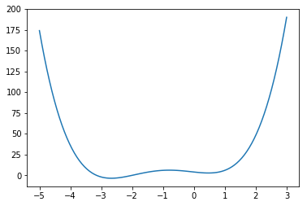
Nous allons utiliser la fonction fmin_bfgs:
x_min = optimize.fmin_bfgs(f, x0=-3)
plt.plot(x, f(x))
plt.plot(x_min, f(x_min),'o')Optimization terminated successfully.
Current function value: -3.506641
Iterations: 4
Function evaluations: 18
Gradient evaluations: 6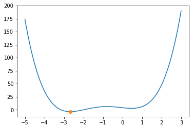
Trouver les zéros d’une fonction
Trouver x tel que f(x) = 0. On va utiliser fsolve.
omega_c = 3.0
def f(omega):
return np.tan(2*np.pi*omega) - omega_c/omegax = np.linspace(0, 3, 1000)
y = f(x)
mask = np.where(abs(y) > 50)
x[mask] = y[mask] = np.nan # get rid of vertical line when the function flip sign
plt.plot(x, y)
plt.plot([0, 3], [0, 0], 'k')
plt.ylim(-5,5)/home/jo/anaconda3/lib/python3.6/site-packages/ipykernel_launcher.py:3: RuntimeWarning: divide by zero encountered in true_divide
This is separate from the ipykernel package so we can avoid doing imports until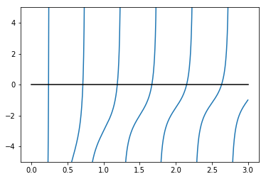
np.unique((optimize.fsolve(f, np.linspace(0.2, 3, 40)) * 1000).astype(int)) / \
1000.array([0.237, 0.712, 1.189, 1.669, 2.15 , 2.635, 3.121])optimize.fsolve(f, 0.72)array([0.71286972])optimize.fsolve(f, 1.1)array([1.18990285])Estimation de paramètres de fonctions
from scipy.optimize import curve_fit
def f(x, a, b, c):
"""
f(x) = a exp(-bx) + c
"""
return a*np.exp(-b*x) + c
x = np.linspace(0, 4, 50)
y = f(x, 2.5, 1.3, 0.5)
yn = y + 0.2*np.random.randn(len(x)) # ajout de bruitplt.plot(x, yn)
plt.plot(x, y, 'r')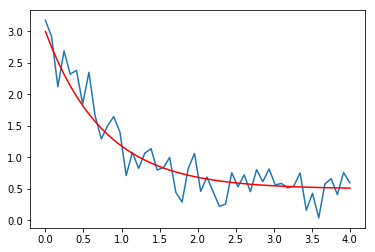
(a, b, c), _ = curve_fit(f, x, yn)
print(a, b, c)2.720993102298113 1.2467465056985165 0.45792650228223275curve_fit?On affiche la fonction estimée:
plt.plot(x, yn)
plt.plot(x, y, 'r')
plt.plot(x, f(x, a, b, c))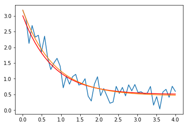
Dans le cas de polynôme on peut le faire directement avec NumPy
x = np.linspace(0,1,10)
y = np.sin(x * np.pi / 2.)
line = np.polyfit(x, y, deg=10)
plt.plot(x, y, '.')
plt.plot(x, np.polyval(line,x), 'r')
# xx = np.linspace(-5,4,100)
# plt.plot(xx, np.polyval(line,xx), 'g')/home/jo/anaconda3/lib/python3.6/site-packages/ipykernel_launcher.py:3: RankWarning: Polyfit may be poorly conditioned
This is separate from the ipykernel package so we can avoid doing imports until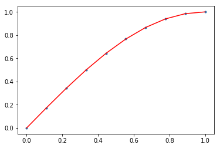
Interpolation
from scipy.interpolate import interp1ddef f(x):
return np.sin(x)n = np.arange(0, 10)
x = np.linspace(0, 9, 100)
y_meas = f(n) + 0.1 * np.random.randn(len(n)) # ajout de bruit
y_real = f(x)
linear_interpolation = interp1d(n, y_meas)
y_interp1 = linear_interpolation(x)
cubic_interpolation = interp1d(n, y_meas, kind='cubic')
y_interp2 = cubic_interpolation(x)from scipy.interpolate import barycentric_interpolate, BarycentricInterpolator
BarycentricInterpolator??plt.plot(n, y_meas, 'bs', label='noisy data')
plt.plot(x, y_real, 'k', lw=2, label='true function')
plt.plot(x, y_interp1, 'r', label='linear interp')
plt.plot(x, y_interp2, 'g', label='cubic interp')
plt.legend(loc=3);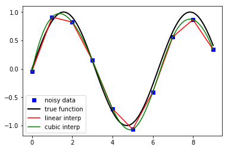
Images
from scipy import ndimage, misc
img = misc.face()
type(img), img.dtype, img.ndim, img.shape(numpy.ndarray, dtype('uint8'), 3, (768, 1024, 3))plt.imshow(img, cmap=plt.cm.gray)
plt.axis('off')
plt.show()_ = plt.hist(img.reshape(img.size),200)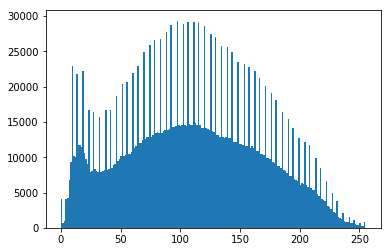
print(img.flags) #cannot edit...
img.setflags(write=1)
print(img.flags) #can edit now C_CONTIGUOUS : True
F_CONTIGUOUS : False
OWNDATA : False
WRITEABLE : False
ALIGNED : True
WRITEBACKIFCOPY : False
UPDATEIFCOPY : False
C_CONTIGUOUS : True
F_CONTIGUOUS : False
OWNDATA : False
WRITEABLE : True
ALIGNED : True
WRITEBACKIFCOPY : False
UPDATEIFCOPY : Falseimg[img < 70] = 50
img[(img >= 70) & (img < 110)] = 100
img[(img >= 110) & (img < 180)] = 150
img[(img >= 180)] = 200
plt.imshow(img, cmap=plt.cm.gray)
plt.axis('off')
plt.show()Ajout d’un flou
img_flou = ndimage.gaussian_filter(img, sigma=2)
plt.imshow(img_flou, cmap=plt.cm.gray)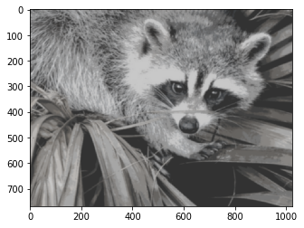
Application d’un filtre
fig, (ax1, ax2, ax3) = plt.subplots(1, 3)
fig.set_size_inches(18.5, 10.5)
ax1.imshow(img[:,:,0], cmap=plt.cm.Reds)
ax2.imshow(img[:,:,1], cmap=plt.cm.Greens)
ax3.imshow(img[:,:,2], cmap=plt.cm.Blues)
plt.tight_layout()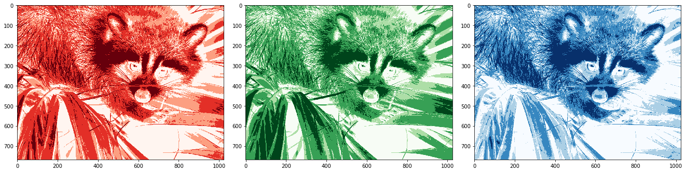
Conversion de l’image en niveaux de gris et affichage:
plt.imshow(np.mean(img, axis=2), cmap=plt.cm.gray)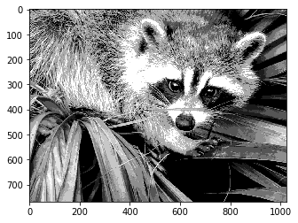
Pour aller plus loin
- http://www.scipy.org - The official web page for the SciPy project.
- http://docs.scipy.org/doc/scipy/reference/tutorial/index.html - A tutorial on how to get started using SciPy.
- https://github.com/scipy/scipy/ - The SciPy source code.
- http://scipy-lectures.github.io